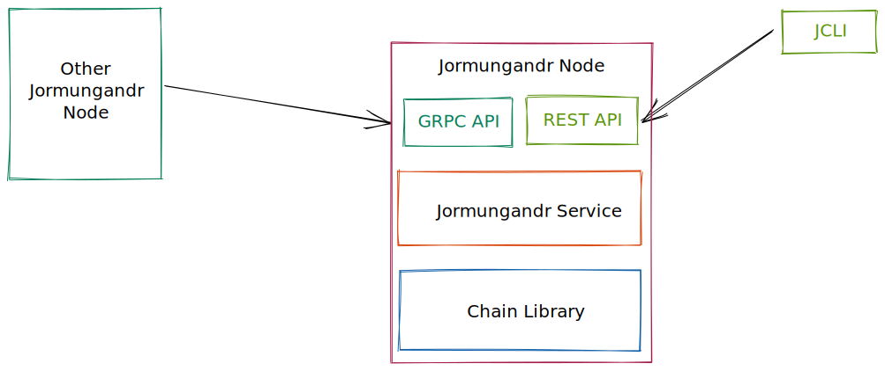

jormungandr-integration-tests
Integration test is a container project for all jormungandr & jcli tests. Tests are validating node correctness, stability and interaction with database/rest api. Also there are non-functional tests which verify node durability and reliability
Architecture of tests
Jormungandr tests architecture relies on test pyramid approach, where most of the effort is put into until and api level and small amount of tests on E2E. Thanks to that we can create fast and reliable tests.

Before approaching Jormungandr testing we need to first remind ourselves a simplified architecture diagram for jcli & jormungandr.

Quick start
Prerequisites
In order to run test jormungandr & jcli need to be installed or prebuild.
Start tests
In order to build jormungandr-automation in main project folder run:
cd testing
cargo test
Tests categories
Test are categories based on application/layer and property under test (functional or non-functional: load, perf etc.) Below diagram is a good overview:

How to run all functional tests
cd testing/jormungandr-integration-tests
cargo test jormungandr --features network
How to run jcli only functional tests
cd testing/jormungandr-integration-tests
cargo test jcli
How to run single node functional tests
cd testing/jormungandr-integration-tests
cargo test jormungandr
How to run single node performance tests
cd testing/jormungandr-integration-tests
cargo test jormungandr::non_functional --features sanity,non-functional
How to run single node endurance tests
cd testing/jormungandr-integration-tests
cargo test jormungandr::non_functional --features soak,non-functional
How to run network functional tests
cd testing/jormungandr-integration-tests
cargo test jormungandr::network --features network
How to run network performance tests
cd testing/jormungandr-integration-tests
cargo test jormungandr::non_functional::network --features sanity,non-functional
How to run network endurance tests
cd testing/jormungandr-integration-tests
cargo test jormungandr::non_functional::network --features soak,non-functional
Frequency
Functional tests are run on each PR. Performance and testnet integration tests are run nightly